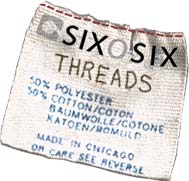

 |
An unseasonably warm September may dupe Chicago newbies, but we seasoned Second City dwellers know what lies ahead: ugly, cold, bitter-cold days and rotten, wretched freezing nights. When I pulled-up to my new Boystown digs during the blizzard of February 2001, I was certain my wool/cashmere blend car coat bought from a sale at Banana Republic would protect me. I was wrong. After suffering frostbite as a welcome-to-Chicago gift, I went shopping to find proper protection. In what I was certain was the coldest winter in the world, I could not find a single pair of gloves or a real winter coat to shield me from this cruel climate in early February. Learn from my suffering: Shop now! By the time it becomes dreadful out and snow is seeping through your mesh-top sneakers, Target will already have been pillaged and the aisles of TJ Maxx will be barren. Make sure to follow the advice below to keep you fashionably warm as Mother Nature prepares to wield her ugly, frigid head. Let's start with the feet. Unless you live in the Gold Coast, chances are no one will be scooping the sidewalk for your morning trudge to the el. Ladies, find some reasonable (read: flat, no heels – not even kitten heels) boots. Don't buy suede; they will be thrashed. The Camper store at 61 E. Oak Street has awesome, comfy boots. Men can find boots there as well, or any of the outdoors outfitters have a good selection. If you have $1 million, the ladies should call Paris and order a pair of luscious shearling-lined wedge boots from Balenciaga. While they have a heel of sorts, they are Balenicaga. If you have this kind of money you probably do live in the Gold Coast, or you have a driver. For the rest of us mortals, just take your good shoes in your work bag, tuck the pant legs in and deal. You will also need a proper winter coat. Exhausted after layering underwear thermals with sweaters, cardigans, blazers and finally my coat, I discovered shearling. I went the faux-fur route, for the animals' sake. But a little hide is mighty nice when the wind chill goes negative. This season, colorful wool coats with a retro flare are popular for both sexes. Of course you will need to accessorize, men included. Hats, gloves, scarves and, of course, the ever-curious mini clip-on ear muff preferred by those who don't want to ruffle their tresses are required. If you are crafty, or aspiring to be, pick up some knitting needles. Scarves are a good starter project and are also a good way to suggest people give you a little more space on the train. The yarn selection at the Knitting Workshop, located at 2218 N. Lincoln Ave., is exceptional. Don't forget a pair of leather gloves to keep your hands warm while packing a snowball to chuck at the bus driver who completely saw you and blew on by. Even though you need to cover every visible part of your body when outdoors, you will have to strip off those layers once you get to your destination, therefore what's underneath is important as well. Let's face it: We are Chicagoans. Yes, we are creative, informed, inspired people, but everyday can't be a runway unless you are reading this right now in your Balenciaga boots. A burlap sack would look brilliant with those boots. My vote this season is for Kerry and tweed, a softer more forgiving cousin to burlap. It's good for him and it's good for her. Guys if you have to show up at an office during the week, try a tweed blazer over a hoodie with denim or plain-colored flannel trousers and cool kicks. Check out Lacoste and Puma's sneakers for fall. Both make very cool options that are passable at most reasonable offices. Leather boots with a side-zip are a good way to make denim less causal. You can pick-up excellent thrift tweed at The Brown Elephant in Lakeview, located at 3651 N. Halsted Ave. Some of the best cast-offs in town can be found at this thrift store, where the neighbors are particularly finicky about fashion. Ladies, if you get one trendy item other than a poncho – which is a good early fall piece, not to be confused with a jacket, which you'll still need – get a tweedy blazer. I'm not much for wearing suits, but the jacket from a great tweed suit can be the most practical part of your wardrobe. Blazers go from pink and prissy to more traditional in mottled browns. Shrunken and very feminine silhouettes make this season's staple modern. You can personalize your look by adding a number of broaches – check the Antiques at the Lincoln Mall at 3141 N. Lincoln Ave. – trailing down the lapel. Channel Irving Penn's photograph of Nicole Kidman on the cover of Vogue a few months back. Or take inspiration from Prada and belt it with a lizard-skin-and-rhinestone-trimmed belt. Your blazer will also look great with layers. Try it with a filmy, very sheer turtleneck underneath or a chantilly lace vest. If your look is a little more rock, take a cue from Chicago-trained artists and fashion designers Libertine and screen print images on to the jacket. Political propaganda, possibly? All that said, shop and stash these cold winter wears away. Immediately deny that the cold is coming and enjoy every last minute of fall. |